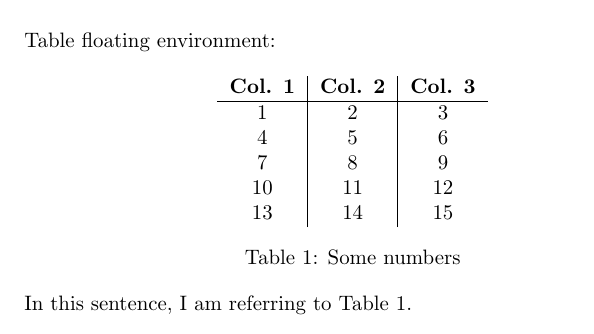

29 The ‘Table’ Floating Environment
Similarily to figures, tables also have their own float environment in LaTeX. As you may remember, the floating environments allow to control the positioning of an object in the document. You can also add captions to these environments, as well as label them, which makes referencing tables anywhere in the document much easier.

\begin{table}[h!]
\centering
\begin{tabular}{c|c|c}
\textbf{Col. 1} & \textbf{Col. 2} &\textbf{Col. 3}\\
\hline
1 & 2 & 3 \\
4 & 5 & 6 \\
7 & 8 & 9 \\
10 & 11 & 12 \\
13 & 14 & 15 \\
\end{tabular}
\caption{Some numbers}
\label{tab:num1}
\end{table}
In this sentence, I am referring to Table \ref{tab:num1}.